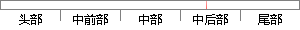

E-Step：假设模型参数已知的情况下隐含变量Z分别取Z_1 〖,Z〗_2…
片段位置图

相似结果|
相似片段 1：在E-step中估计了隐含数据，我们可以假设隐含数据已知，并在此基础上通过最大化似然度来估计新的概率模型参数。最大期望值算法首先由由ArthurDempster，NanLaird和DonaldRubin在他们
相似片段 2：将隐含的变量用已经观测到的数据和模型中的目前状态估算出来，使计算过程中不再含有隐含参量；在最大化时或称为 M-step，是在假设隐含数据已知的情况下将 ? 最大化。这就是机器学习中的半监督学习
|
※ 片段修改建议 ※
近似词参考：- 假设：假定 假如
- 模型：模子
- 分别：别离 划分 离别
系统自动生成语句： E-Step：假定模子参数已知的情况下隐含变量Z别离取Z_1 〖,Z〗_2…
注：本片段修改建议为系统自动生成，仅供参考。